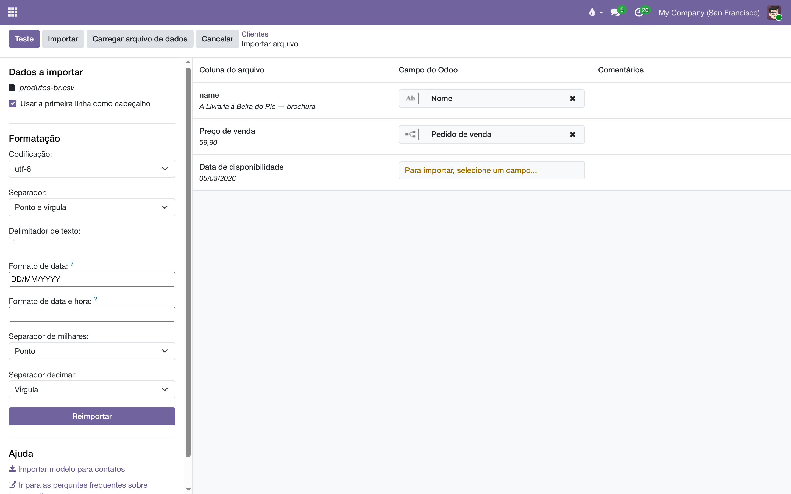

A tela de importação passa a assumir o que a planilha brasileira escreve: vírgula decimal, ponto de milhar e data em dia/mês/ano. Um patch técnico — não há tela nova, nem menu, nem nada a configurar.
A tela de importação do sistema vinha de fábrica com os separadores americanos — milhar "," e decimal "." — fixos, qualquer que fosse o idioma. Um preço escrito 59,90 tinha a vírgula tratada como marca de milhar e entrava como 5990,00: cem vezes maior, sem erro e sem nada na prévia para denunciar. As datas tinham o problema gêmeo: 05/03/2026 podia ser lido como 3 de maio. Valores com os dois separadores (1.234,56) eram deduzidos certos, o que tornava o estrago misto e fácil de passar despercebido.
Instalado o módulo, os três padrões da seção Formatação da tela de importação já vêm brasileiros:
| Opção | Antes | Agora |
|---|---|---|
| Separador decimal | Ponto | Vírgula |
| Separador de milhares | Vírgula | Ponto |
| Formato de data | o do idioma da sessão | DD/MM/YYYY |

São apenas padrões: os três seletores continuam na tela e continuam editáveis. Para importar um arquivo em formato americano, basta trocá-los ali mesmo, naquele arquivo — nada fica travado.
O módulo se instala sozinho junto com a importação e vale para qualquer tela de importar — produtos, contatos, lançamentos. Não há opção em Definições: o comportamento é este, sempre.